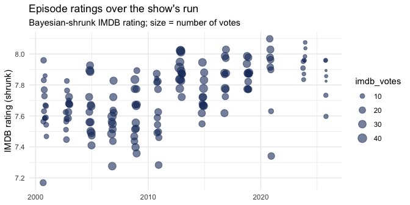

This package is an ode to a wonderfully informative and fun host in Rick Steves. It’s a tidy snapshot of every episode of the public-television travel series Rick Steves’ Europe (2000–2025), enriched for teaching introductory data analysis. One row per episode, 38 columns of identity, editorial classification, geography, air dates, IMDB ratings, country flags, thumbnails, and canonical best-of summaries.
Built in the spirit of ModernDive — almost every column is a candidate for dplyr::filter(), ggplot2::geom_*(), or leaflet::addMarkers().
Attribution
Source: Rick Steves’ Europe (compiled dataset).
Note: This dataset was created from public sources for teaching purposes and is not an official or verified Rick Steves’ Europe dataset.
Used with the kind permission of the Rick Steves’ Europe team, in keeping with Rick’s long-standing commitment to education.
Installation
Install the released version from CRAN:
install.packages("steves")Or the development version from GitHub:
# install.packages("pak")
pak::pak("moderndive/steves")Usage
#> # A tibble: 10 × 2
#> primary_country n
#> <chr> <int>
#> 1 Italy 29
#> 2 Multiple 20
#> 3 United Kingdom 20
#> 4 France 15
#> 5 Germany 9
#> 6 Spain 9
#> 7 Turkey 6
#> 8 Austria 4
#> 9 Greece 4
#> 10 Portugal 4
episodes |>
filter(!imdb_low_votes) |>
arrange(desc(imdb_rating_shrunk)) |>
select(season, title, primary_country, flag,
imdb_rating, imdb_votes, imdb_rating_shrunk) |>
head(10)
#> # A tibble: 10 × 7
#> season title primary_country flag imdb_rating imdb_votes imdb_rating_shrunk
#> <int> <chr> <chr> <chr> <dbl> <int> <dbl>
#> 1 11 Austr… Austria 🇦🇹 8.5 21 8.10
#> 2 9 South… United Kingdom 🇬🇧 8.3 25 8.03
#> 3 11 Germa… Germany 🇩🇪 8.3 25 8.03
#> 4 7 Paris… France 🇫🇷 8.2 37 8.02
#> 5 7 Paris… France 🇫🇷 8.2 37 8.02
#> 6 7 Londo… United Kingdom 🇬🇧 8.2 34 8.01
#> 7 9 Bulga… Bulgaria 🇧🇬 8.2 27 7.99
#> 8 10 Lisbon Portugal 🇵🇹 8.2 27 7.99
#> 9 10 The B… Italy 🇮🇹 8.2 25 7.98
#> 10 11 Swiss… Switzerland 🇨🇭 8.2 25 7.98
library(ggplot2)
ggplot(episodes, aes(x = original_air_date, y = imdb_rating_shrunk)) +
geom_point(aes(size = imdb_votes), alpha = 0.6, color = "#1B3A6B") +
scale_size_continuous(range = c(1, 5)) +
labs(title = "Episode ratings over the show's run",
subtitle = "Bayesian-shrunk IMDB rating; size = number of votes",
x = NULL, y = "IMDB rating (shrunk)") +
theme_minimal()
#> Warning: Removed 8 rows containing missing values or values outside the scale range
#> (`geom_point()`).
Provenance
Editorial fields (title, synopsis, theme_tags, region, primary_destination, episode_type, is_retired) are curated. Everything else is built from public sources and joined back on (season, episode_in_season) or on the IMDB title id tt1243815.
| Source | Fields |
|---|---|
| IMDB datasets (non-commercial) | imdb_* |
| OSM/Nominatim via tidygeocoder |
lat, long, geo_match
|
countrycode |
iso2, flag
|
| TVmaze API | tvmaze_* |
| Wikipedia episode tables | (cross-reference) |
ricksteves.com Open Graph tags |
image_url, best_summary
|
License
MIT for the package code and tidied data scaffolding. IMDB rating data is © IMDB.com, Inc. and used under their non-commercial license. Episode images and summaries are © Rick Steves’ Europe and used under fair-use for research and education.
This dataset is compiled from public sources for teaching purposes and is not an official or verified Rick Steves’ Europe dataset. It is shared with the permission of the Rick Steves’ Europe team.